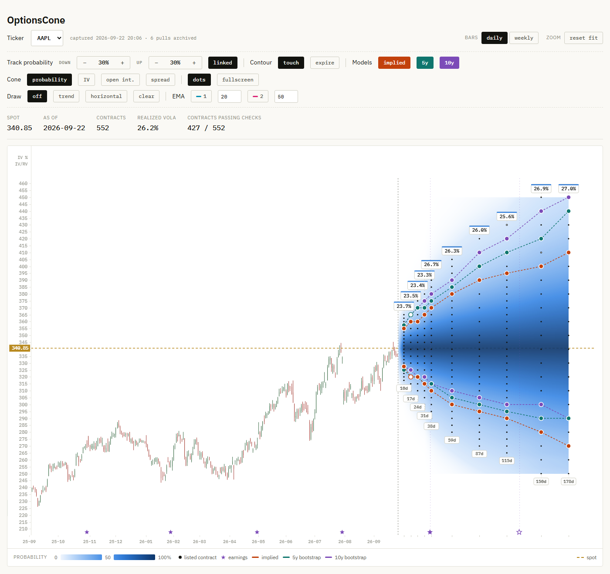
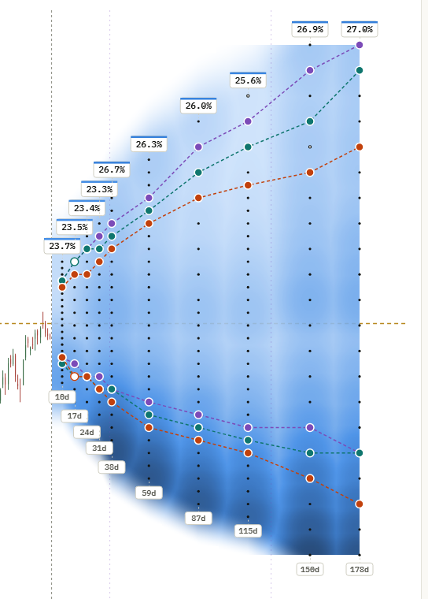
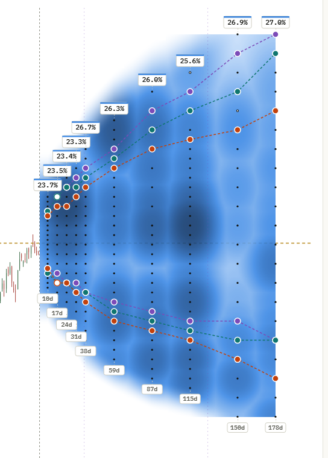
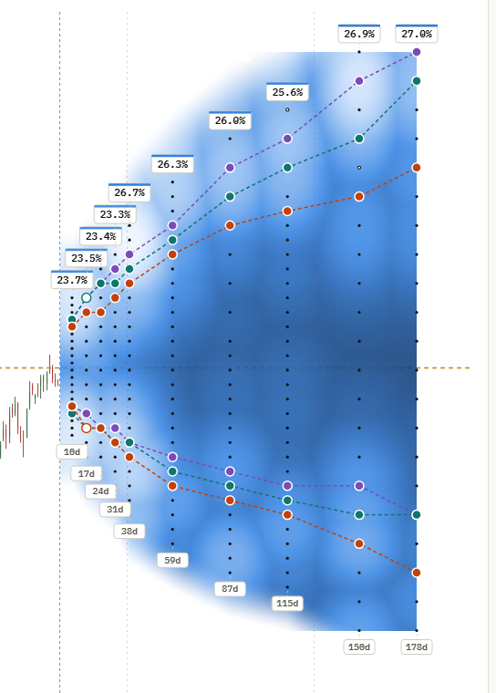
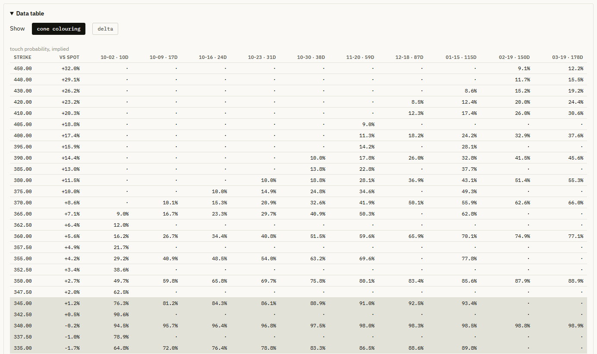

How likely is the stock to reach that strike before expiry?
OptionsCone shows the probability of touching every listed option strike, for every expiry, as a cone on the price chart. It compares what the option market implies with what the stock's own history says. Free and open source, for Windows.

What you see
One chart for the whole option chain
The cone
Every dot is a listed contract. The colour behind it is the probability that the price touches that strike before that expiry: dark near the money, fading to pale where a touch becomes unlikely. The cone widens with time because the price has longer to travel.
Three models
Implied from the option prices, with each contract's own volatility.
5y and 10y from a block bootstrap of the stock's daily history, intraday highs and lows included.
Contour lines
Pick a probability, say 30%, and each model draws a line through the listed strikes that match it at every expiry, above and below spot. Where the lines separate, the market and the stock's past disagree.
Why touch
Delta is not a probability
Many traders read a 0.30 delta as "a 30% chance of expiring in the money". Delta is N(d1); the risk-neutral chance of finishing in the money is N(d2). On a volatile stock the gap is wide: a put with a delta of 0.30 can carry a 43% chance of expiring in the money.
For a stop level, a price target or a short strike, the more useful question is often whether the price gets there at all. That is the probability of touch, roughly twice the probability of finishing beyond the strike. OptionsCone shows touch by default and expiry probability with one click, and shows delta and gamma next to them so the numbers can be checked against your broker.
Other views
Colour the cone by what matters for the trade
The same cone can show implied volatility, open interest or the bid-ask spread of every contract. Hover a contract for its quote, probabilities, delta and gamma.
{kind=link}

{kind=link}

{kind=link}

The numbers
Every value in a table
The data table lists whatever the cone shows, strike by expiry, for the contracts that are actually listed. Switch it to delta to compare a whole chain with your broker at once.
A data quality report shows how many quotes passed the checks, by moneyness, and the Methods section explains every calculation. Nothing is hidden behind a score.

Under the hood
Built to be checked
Each contract's implied volatility is solved on an American binomial tree with discrete dividends. Impossible quotes are removed and doubtful ones are flagged. The bootstrap keeps fat tails and calm and turbulent stretches of the real history.
Every chain you download is archived on your computer, so a history of the option market builds up for every ticker you follow. The code is open for anyone to read. Read the methods.
Get started
Three steps
- Download
OptionsCone.exefrom the releases page and run it. If Windows warns about an unknown app, click More info, then Run anyway. - Type a ticker, for example
AAPL, and press download. The first download takes a minute or two. - Read the cone. Set the probability you care about and compare the three lines. The manual explains every control.
Questions
Frequently asked
What is the probability of touch?
The probability that the stock price reaches a given strike at any time before expiry, even if it moves away again afterwards. It is always at least as high as the probability of finishing beyond the strike, and often about twice as high.
What is the difference between the implied and the bootstrap models?
The implied model uses option prices, so it reflects what the market charges for the risk today. The bootstrap models replay the stock's own last five or ten years in random blocks of twenty trading days. They describe what happened, not what the market expects. Where they differ, the option market is pricing a move the history did not produce, or the other way round.
Is OptionsCone free?
Yes. It is free and open source under the GNU Affero General Public License v3.0. There is no account, no subscription and no API key.
Where does the data come from, and is it real time?
Option chains, prices and earnings dates come from Yahoo Finance through the yfinance library, fetched directly by your computer. Option quotes are delayed by about 15 minutes. Outside US trading hours the app uses the newest download taken during the session.
Does the app send my data anywhere?
No. It contacts Yahoo Finance for market data and Google Fonts for its typeface. There is no telemetry and no account. Everything you download stays in a folder on your computer.
Why does Windows show a warning when I start it?
The executable is not code-signed, which costs money every year. SmartScreen warns about any unsigned program it has not seen often. Click More info, then Run anyway. The source code and the build script are public, and each release lists a SHA-256 checksum of the file.
Does it run on Mac or Linux?
The ready-made download is for Windows 10 and 11. The source is plain Python and can be run elsewhere with the steps in the README, but only Windows has been tested.
Which tickers work?
Any US stock or ETF with listed options on Yahoo Finance. ETFs have no earnings dates, so no earnings markers appear for them.
Is this financial advice?
No. All probabilities are estimates from market prices or from the past. They are not forecasts, and the data can be delayed, incomplete or wrong.